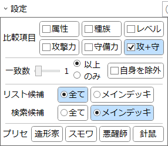

統計>ステータスマッチング
指定されたモンスターと特定のステータスが一致するモンスターを調べるため機能です。
説明
要素をクリックすると説明が表示されます。設定

-
比較項目
- 一致するかどうかを判定したいステータスにチェックします。
- 「レベル」をチェックすると、エクシーズモンスターは候補から除外されます。
- 「レベル」「守備力」「攻+守」のいずれか1つ以上をチェックすると、リンクモンスターは候補から除外されます。
- 「攻+守」をチェックすると、攻撃力または守備力が「?」のモンスターは候補から除外されます。
-
一致数
- 上でチェックしたステータスのうち、いくつが一致すればよいかを指定します。
-
同名を除外
- チェックすると、自分自身を検索候補から除外します。
- チェックしない場合、検索リストにはそのカード自身が含まれる場合があります。
-
候補タイプ
-
検索対象となるカードタイプを指定します。
- 全て：全てのモンスターが候補になります。
- メインデッキ：メインデッキに入るモンスター(儀式を含む)のみが候補になります。
- 「リスト候補」は候補リスト(左)に表示するカード、「検索候補」は検索リスト(右)に表示するカードのタイプを指定します。
-
検索対象となるカードタイプを指定します。
-
プリセット
- ボタンを押すとその内容に従って設定されます。
-
造形家：《魂の造形家》
- 比較項目：攻+守
- リスト候補：全て、検索候補：メイン
-
スモワ：《スモール・ワールド》
- 比較項目：属性、種族、レベル、攻撃力、守備力
- 一致数：1つのみ
- リスト候補：メイン、検索候補：メイン
-
悪醒師：《悪醒師ナイトメルト》
- 比較項目：属性、種族、レベル、攻撃力、守備力
- 一致数：5つ以上(全て)
- 同名を除外
- リスト候補：全て、検索候補：全て
-
針鼠：《レスキューヘッジホッグ》
- 比較項目：属性、種族、レベル
- 一致数：3つ以上(全て)
- 同名を除外
- リスト候補：メイン、検索候補：メイン